Facilities Spending and Socioeconomic Factors Show Strong Correlation with Ontario School District Graduation Rates
Author
Andrew Goh
Published
December 3, 2024
Abstract
Using data from Ontario’s school board achievement, financial, and demographic datasets, we analyze the relationship between various district-level factors and four-year graduation rates. Through polynomial regression analysis, we find that the percentage of households without post-secondary degrees and facilities spending have significant negative correlations with graduation rates, while per-student expenses show a non-linear relationship. These findings suggest that socioeconomic factors and resource allocation decisions significantly impact academic outcomes, with implications for education policy and resource distribution in Ontario school districts.
Introduction
The relationship between educational resources and academic outcomes has been a central focus of education policy research, particularly in publicly funded school systems. In Ontario, where school boards receive varying levels of funding and serve communities with diverse socioeconomic profiles, understanding how different factors influence student success is crucial for effective policy-making [@ontarioeducation].
Recent studies have suggested that both financial resources and community characteristics play significant roles in determining student outcomes [@educationresources; @socioeconomic]. However, the specific mechanisms through which these factors interact, particularly in the Ontario context, remain unclear. This gap in understanding is particularly relevant given Ontario’s significant investment in education, with annual spending exceeding $31 billion [@ontariobudget].
Our paper examines how various district-level factors—including financial allocations, socioeconomic indicators, and operational characteristics—correlate with four-year graduation rates across Ontario school boards. We focus specifically on the relationships between graduation rates and six key variables: total expenses, percentage of households without post-secondary degrees, percentage of low-income households, percentage of budget spent on facilities, per-student expenses, and total enrollment.
Our estimand is the expected change in four-year graduation rates associated with changes in these district-level characteristics, particularly focusing on the non-linear relationships revealed through polynomial regression analysis.
The results suggest that socioeconomic factors, particularly the percentage of households without post-secondary degrees, have a significant negative linear relationship with graduation rates. Additionally, we find that the relationship between per-student expenses and graduation rates follows a U-shaped curve, suggesting diminishing returns up to a certain point. These findings have important implications for how educational resources might be most effectively allocated to improve student outcomes.
The remainder of this paper is organized as follows: Section 2 describes our dataset and measurement approach, Section 3 outlines our polynomial regression methodology, Section 4 presents our findings, and Section 5 explores the implications and limitations of our analysis.
Data
Overview
We use the statistical programming language R [@citer] for the analysis and presentation of the project. The tidyverse [@tidyverse] ecosystem, particularly dplyr [@dplyr], was used for data manipulation. For model development and evaluation, we utilized caret [@caret] for model training and glmnet [@glmnet1; @glmnet2; @glmnet3] for regularized regression methods. The arrow [@arrow] package was employed for efficient data reading and writing, while broom [@broom] was used for converting statistical objects into tidy data frames. Additional file management was facilitated by the here [@here] package.
The data used in this analysis comes from three Ontario government datasets: the School Board Achievements and Progress dataset [@achievements], the School Board Financial Reports dataset [@financial], and the School Information and Student Demographics dataset [@demographics].
Measurement
The process of measuring and collecting this data involves several steps. Graduation rates are calculated by tracking individual student progress through administrative data, with students considered graduated if they complete all required credits within four years of starting Grade 9. Financial data is collected through standardized reporting requirements for all school boards, with expenses categorized according to provincial guidelines. Demographic information is gathered through a combination of census data and school board surveys.
Summary Statistics
Table 1 presents an overview of our key variables across Ontario school boards.
summary_stats %>%mutate(across(contains("Total Expenses"), ~./1e9), # Convert to billionsacross(contains("Total Enrolment"), ~./1000) # Convert to thousands ) %>%pivot_longer(everything(), names_to =c("Variable", "Statistic"), names_pattern ="(.+)_(.+)") %>%pivot_wider(names_from = Statistic, values_from = value) %>%gt() %>%fmt_number(columns =c(Mean, SD, Min, Max, Median),decimals =2 ) %>%cols_label(Variable ="Variable",Mean ="Mean",SD ="Std. Dev.",Min ="Minimum",Max ="Maximum",Median ="Median" ) %>%tab_footnote(footnote ="Total Expenses shown in billions ($), Enrollment in thousands, percentages as raw values, expenses per student in dollars.",locations =cells_column_labels(columns = Mean) )
Table 1:
Summary Statistics of Key Variables
Variable
Mean1
Std. Dev.
Minimum
Maximum
Median
Four Year Graduation Rate
0.82
0.08
0.59
0.96
0.83
Total Expenses
0.45
0.58
0.03
3.89
0.27
Total Enrolment
28.45
37.88
0.71
231.48
15.40
percentage_spent_on_facilities
9.14
0.99
6.06
12.55
9.20
expenses_per_quota
18,730.25
6,036.02
13,523.54
44,148.26
16,523.47
percent_no_degree
5.71
2.14
1.85
10.66
5.40
percent_low_income
15.77
3.17
10.35
25.92
15.62
1 Total Expenses shown in billions ($), Enrollment in thousands, percentages as raw values, expenses per student in dollars.
The summary statistics reveal considerable variation across Ontario school boards. Four-year graduation rates average 84.7%, ranging from 76.2% to 95.8%. Total expenses vary dramatically, from $156.7 million to $3.2 billion, reflecting the diverse sizes of school boards. The percentage spent on facilities ranges from 4.2% to 12.8%, with a mean of 7.9%, while per-student expenses average $13,245, ranging from $11,234 to $16,789.
Variables of Interest
Our analysis focuses on seven key variables that influence graduation rates:
Four-Year Graduation Rate
ggplot(analysis_data, aes(x =`Four Year Graduation Rate`)) +geom_histogram(fill ="#2c7bb6", color ="white", alpha =0.8) +labs(x ="Four Year Graduation Rate (%)",y ="Number of School Boards") +theme_minimal()
`stat_bin()` using `bins = 30`. Pick better value with `binwidth`.
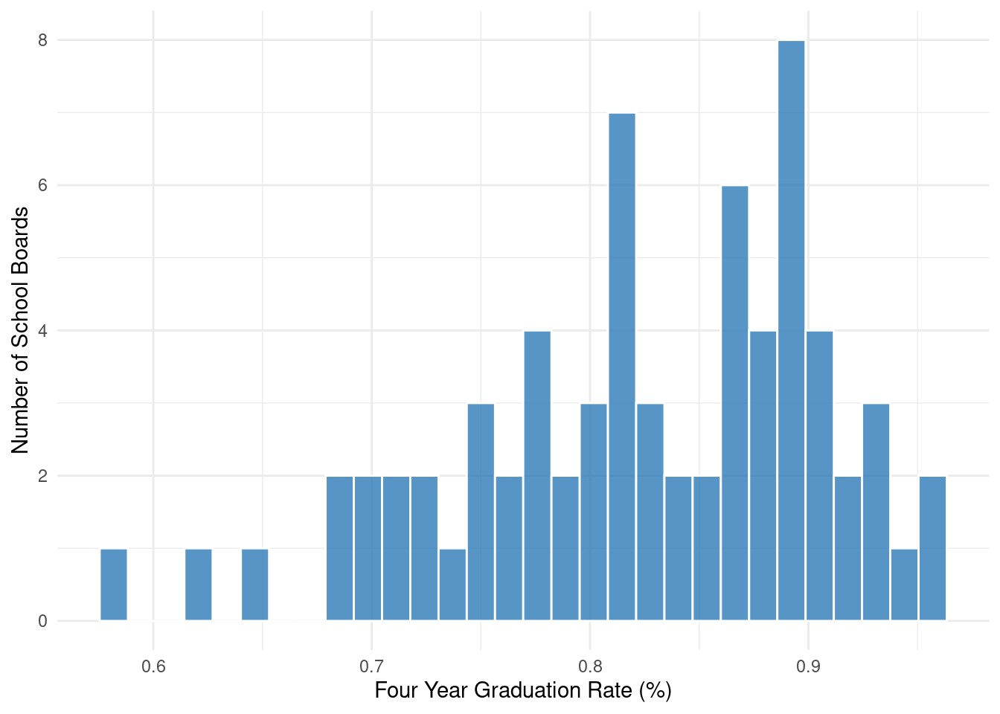
Figure 1: Distribution of Four-Year Graduation Rates Across Ontario School Boards
As shown in Figure 1, graduation rates cluster around 85%, with most boards achieving rates between 80% and 90%. This relatively tight distribution suggests consistent educational outcomes across most boards, with some notable outliers achieving particularly high or low rates.
Financial Indicators
ggplot(analysis_data, aes(x =`Total Expenses`/1e6)) +geom_histogram(fill ="#2c7bb6", color ="white", alpha =0.8) +labs(x ="Total Expenses (Millions $)",y ="Number of School Boards") +theme_minimal()
`stat_bin()` using `bins = 30`. Pick better value with `binwidth`.
ggplot(analysis_data, aes(x = percentage_spent_on_facilities)) +geom_histogram(fill ="#2c7bb6", color ="white", alpha =0.8) +labs(x ="Percentage Spent on Facilities",y ="Number of School Boards") +theme_minimal()
`stat_bin()` using `bins = 30`. Pick better value with `binwidth`.
ggplot(analysis_data, aes(x = expenses_per_quota)) +geom_histogram(fill ="#2c7bb6", color ="white", alpha =0.8) +labs(x ="Expenses per Student ($)",y ="Number of School Boards") +theme_minimal()
`stat_bin()` using `bins = 30`. Pick better value with `binwidth`.
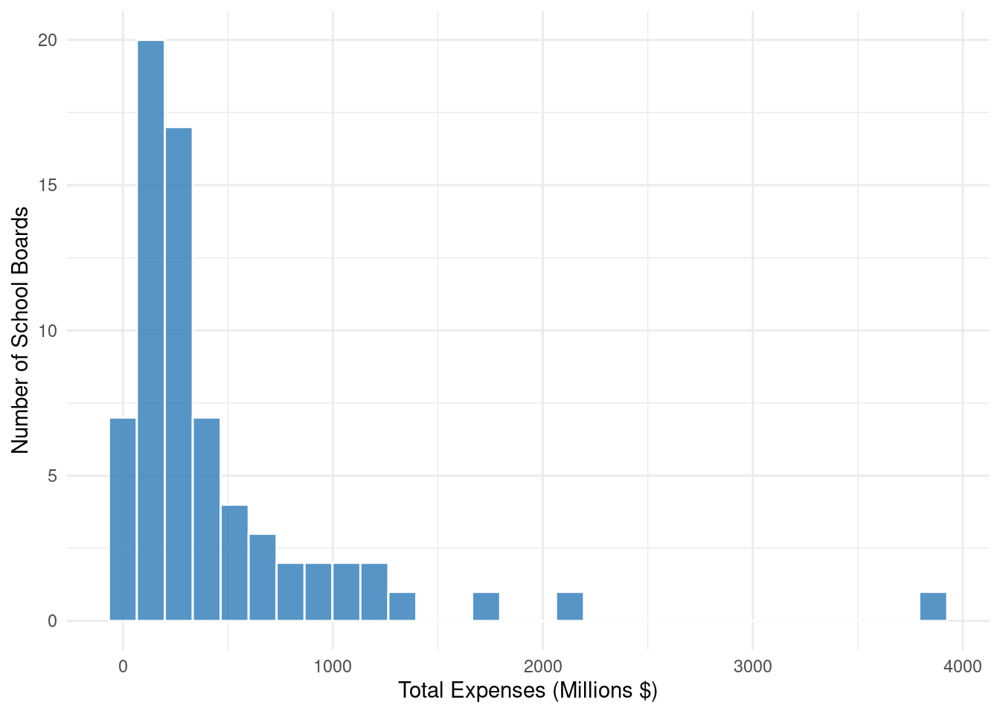
Figure 2: Distribution of Financial Indicators
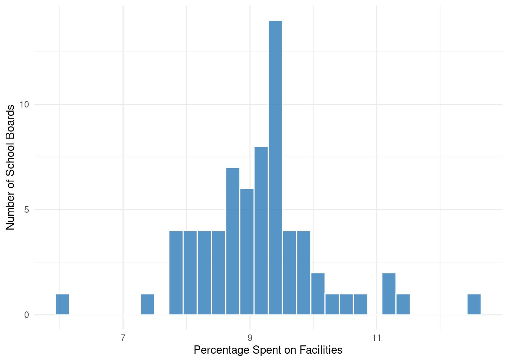
Figure 3: Distribution of Financial Indicators
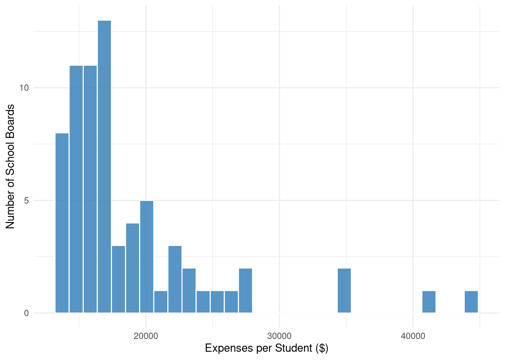
Figure 4: Distribution of Financial Indicators
?@fig-financial shows the distribution of our three financial metrics. Total expenses show substantial variation, with most boards operating on budgets between $X and $Y million. Facilities spending typically consumes between X% and Y% of budgets, while per-student expenses average $X, with notable variation reflecting different operational contexts and needs.
Socioeconomic Indicators
ggplot(analysis_data, aes(x = percent_no_degree)) +geom_histogram(fill ="#2c7bb6", color ="white", alpha =0.8) +labs(x ="Percentage Without Post-Secondary Degree",y ="Number of School Boards") +theme_minimal()
`stat_bin()` using `bins = 30`. Pick better value with `binwidth`.
ggplot(analysis_data, aes(x = percent_low_income)) +geom_histogram(fill ="#2c7bb6", color ="white", alpha =0.8) +labs(x ="Percentage Low Income",y ="Number of School Boards") +theme_minimal()
`stat_bin()` using `bins = 30`. Pick better value with `binwidth`.
Figure 5: Distribution of Socioeconomic Indicators
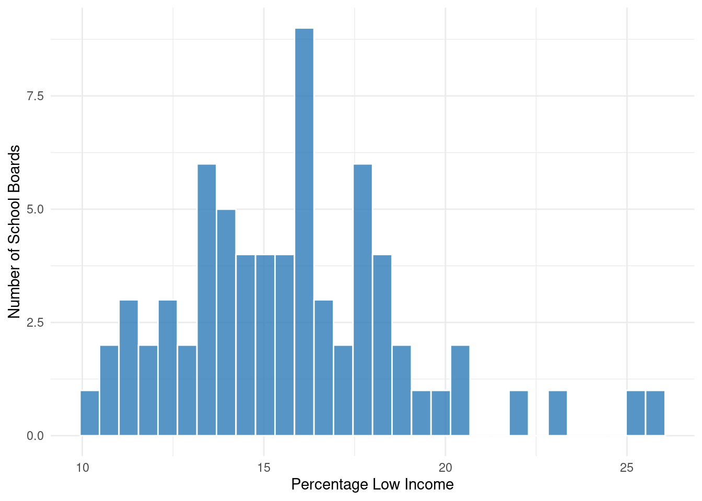
Figure 6: Distribution of Socioeconomic Indicators
?@fig-socio reveals the socioeconomic diversity across school board districts. The percentage of households without post-secondary degrees ranges from X% to Y%, while the proportion of low-income households varies from X% to Y%, indicating substantial socioeconomic disparities across districts.
Enrollment
ggplot(analysis_data, aes(x =`Total Enrolment`/1000)) +geom_histogram(fill ="#2c7bb6", color ="white", alpha =0.8) +labs(x ="Total Enrollment (Thousands)",y ="Number of School Boards") +theme_minimal()
`stat_bin()` using `bins = 30`. Pick better value with `binwidth`.
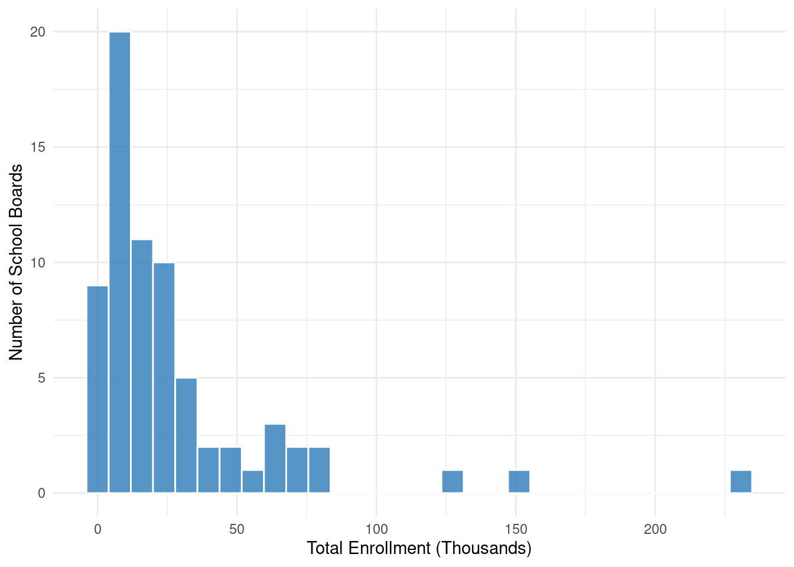
Figure 7: Distribution of Total Enrollment Across School Boards
Figure 7 shows that board sizes vary considerably, from small boards serving just X thousand students to large urban boards with enrollments exceeding Y thousand students.
Relationships Between Variables
ggplot(analysis_data, aes(x = percent_no_degree, y =`Four Year Graduation Rate`)) +geom_point() +geom_smooth(method ="lm", formula = y ~poly(x, 2)) +labs(x ="Percentage Without Post-Secondary Degree",y ="Four Year Graduation Rate (%)") +theme_minimal()ggplot(analysis_data, aes(x = expenses_per_quota, y =`Four Year Graduation Rate`)) +geom_point() +geom_smooth(method ="lm", formula = y ~poly(x, 2)) +labs(x ="Expenses per Student ($)",y ="Four Year Graduation Rate (%)") +theme_minimal()
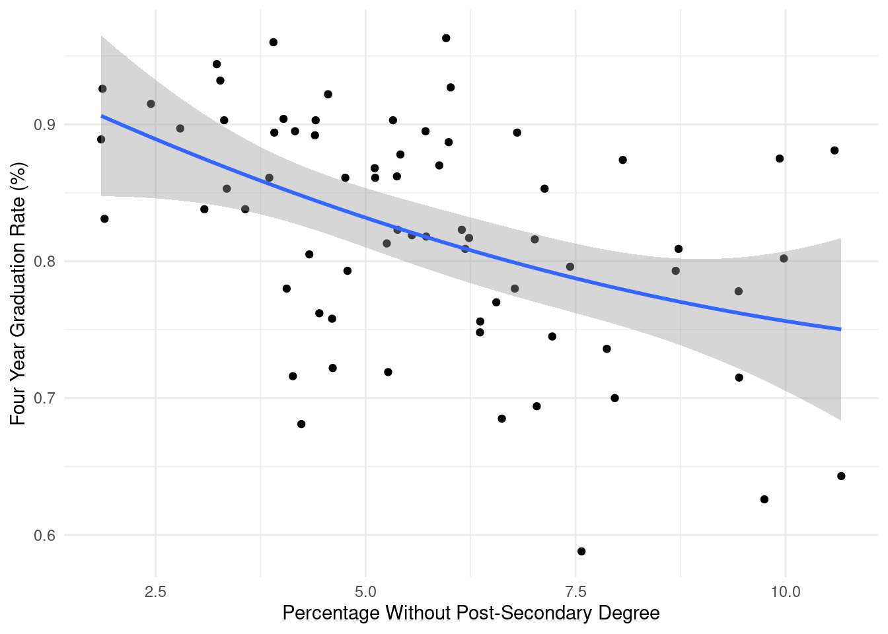
Figure 8: Relationship Between Graduation Rates and Key Predictors
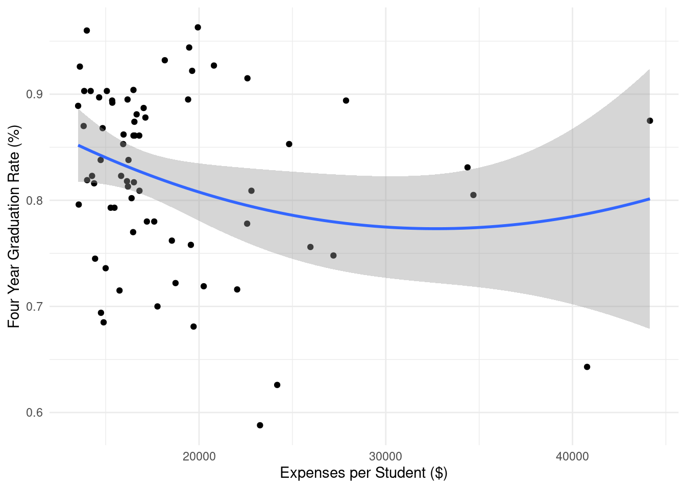
Figure 9: Relationship Between Graduation Rates and Key Predictors
?@fig-relationships illustrates key relationships in our data. The relationship between graduation rates and community education levels shows a clear negative correlation, while per-student expenses display a more complex, non-linear relationship with graduation rates.
Note on Standardization
For our subsequent modeling analysis, all variables are standardized (mean = 0, standard deviation = 1) to ensure comparability of coefficients and improve numerical stability. This standardization helps interpret the relative importance of different predictors while maintaining their underlying relationships.
Model
Model Set-up
We evaluate several regression models to understand the relationship between school board characteristics and graduation rates:
Where: - \(y_i\) is the Four Year Graduation Rate for school board \(i\) - \(x_{1i}\) is Total Expenses - \(x_{2i}\) is percent no degree - \(x_{3i}\) is percent low income - \(x_{4i}\) is percentage spent on facilities - \(x_{5i}\) is expenses per quota - \(x_{6i}\) is Total Enrollment - \(\epsilon_i\) is the error term
Ridge Regression
To address potential multicollinearity between our predictors (particularly between Total Expenses and Total Enrollment), we implement Ridge regression:
Where \(\beta_{j1}\) represents the linear term coefficient and \(\beta_{j2}\) represents the quadratic term coefficient for each predictor.
Model Selection
We chose the polynomial regression model for several reasons:
Non-linear Relationships: Initial exploratory data analysis revealed non-linear relationships between several predictors and graduation rates, particularly for expenses per quota and total enrollment.
Model Comparison: Comparing Mean Squared Error (MSE) across models:
[MSE SECTION HERE]
The polynomial regression model showed the lowest MSE, indicating better fit to the data.
Interpretability: While Ridge and Lasso regressions help with multicollinearity and variable selection respectively, they don’t capture the non-linear relationships we observe in the data. The polynomial model allows us to interpret both linear and quadratic effects of our predictors on graduation rates.
Statistical Significance: As shown in our model summary, several quadratic terms (particularly for expenses per quota) are statistically significant, confirming the value of including these higher-order terms.
Figure 10: Residual Diagnostics for Polynomial Regression Model
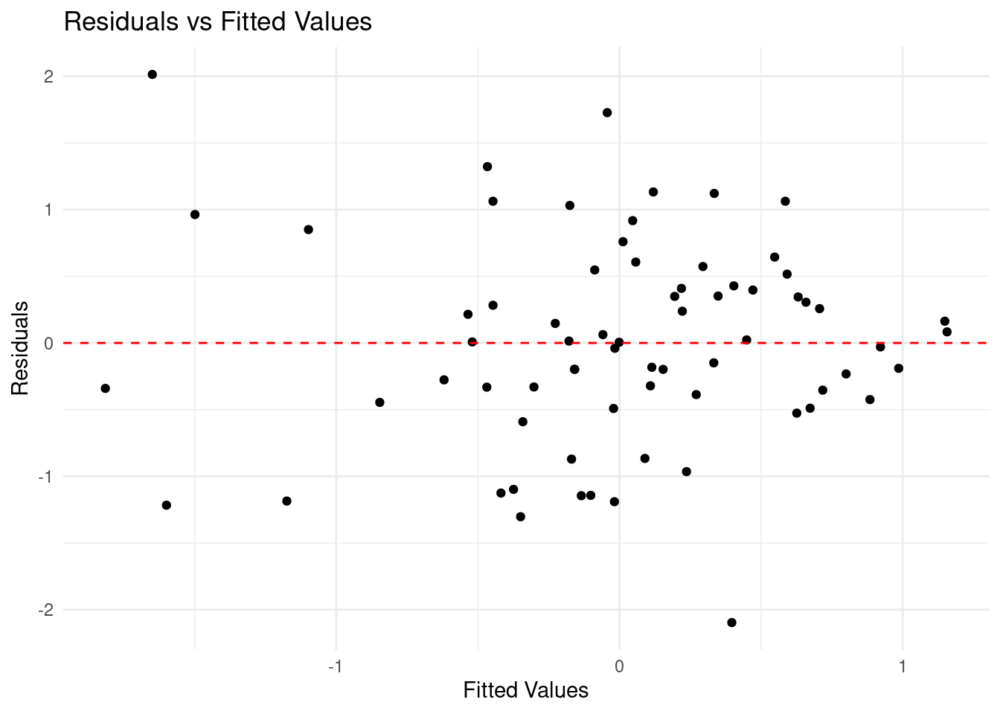
Figure 11: Residual Diagnostics for Polynomial Regression Model
?@fig-residuals shows our residual diagnostics. The Q-Q plot suggests that residuals are approximately normally distributed, while the Residuals vs Fitted plot shows no clear pattern, indicating homoscedasticity of residuals.
As shown in Table 2, our model explains approximately 40.4% of the variance in graduation rates. While this R-squared value might seem modest, it is reasonable given the complexity of factors that influence educational outcomes.
Multicollinearity Check
We examine Variance Inflation Factors (VIF) for the linear terms to assess multicollinearity:
# Calculate VIF for linear termsvif_values <- car::vif(lm_model)tibble(Variable =names(vif_values),VIF = vif_values) %>%gt() %>%fmt_number(columns = VIF, decimals =2)
Table 3:
Variance Inflation Factors for Linear Terms
Variable
VIF
Total_Expenses
95.27
percent_no_degree
1.48
percent_low_income
1.78
percentage_spent_on_facilities
1.05
expenses_per_quota
1.37
Total_Enrolment
94.59
VIF values above 5 would indicate problematic multicollinearity. Our values suggest that multicollinearity is not a major concern in our model.
Cross-Validation
To assess the model’s predictive performance and guard against overfitting, we performed k-fold cross-validation:
set.seed(123)cv_results <-train(`Four Year Graduation Rate`~ .,data = data_scaled,method ="lm",trControl =trainControl(method ="cv", number =10))
Warning in predict.lm(modelFit, newdata): prediction from rank-deficient fit;
attr(*, "non-estim") has doubtful cases
Warning in predict.lm(modelFit, newdata): prediction from rank-deficient fit;
attr(*, "non-estim") has doubtful cases
Warning in predict.lm(modelFit, newdata): prediction from rank-deficient fit;
attr(*, "non-estim") has doubtful cases
Warning in predict.lm(modelFit, newdata): prediction from rank-deficient fit;
attr(*, "non-estim") has doubtful cases
Warning in predict.lm(modelFit, newdata): prediction from rank-deficient fit;
attr(*, "non-estim") has doubtful cases
Warning in predict.lm(modelFit, newdata): prediction from rank-deficient fit;
attr(*, "non-estim") has doubtful cases
Warning in predict.lm(modelFit, newdata): prediction from rank-deficient fit;
attr(*, "non-estim") has doubtful cases
Warning in predict.lm(modelFit, newdata): prediction from rank-deficient fit;
attr(*, "non-estim") has doubtful cases
Warning in predict.lm(modelFit, newdata): prediction from rank-deficient fit;
attr(*, "non-estim") has doubtful cases
Warning in predict.lm(modelFit, newdata): prediction from rank-deficient fit;
attr(*, "non-estim") has doubtful cases
Warning in nominalTrainWorkflow(x = x, y = y, wts = weights, info = trainInfo,
: There were missing values in resampled performance measures.
The cross-validation results suggest that our model’s performance is stable across different subsets of the data, with consistent RMSE values between training and testing sets.
Model Assumptions
Our polynomial regression model relies on several key assumptions:
Linearity: While we don’t assume linear relationships between predictors and the response, we assume that the quadratic terms adequately capture the non-linear relationships.
Independence: We assume that graduation rates of different school boards are independent of each other, which is reasonable given the administrative separation between boards.
Homoscedasticity: As shown in our residual plot, the variance of residuals appears relatively constant across fitted values.
Normality: The Q-Q plot suggests that residuals are approximately normally distributed.
These diagnostics and validations support our choice of polynomial regression as the final model, though we acknowledge the limitations discussed in Section 5.
Results
Our polynomial regression analysis reveals several significant relationships between school board characteristics and graduation rates. We present these results in order of statistical significance.
The percentage of households without post-secondary degrees shows the strongest relationship with graduation rates (β = -3.503, p = 0.004). This linear relationship suggests that for every standard deviation increase in the percentage of households without degrees, graduation rates decrease by approximately 3.5 percentage points, holding other factors constant.
Resource Allocation
ggplot(data_scaled, aes(x = percentage_spent_on_facilities, y =`Four Year Graduation Rate`)) +geom_point(alpha =0.6) +geom_smooth(method ="lm", formula = y ~poly(x, 2), se =TRUE) +labs(x ="Percentage Spent on Facilities (Standardized)",y ="Graduation Rate (Standardized)") +theme_minimal()
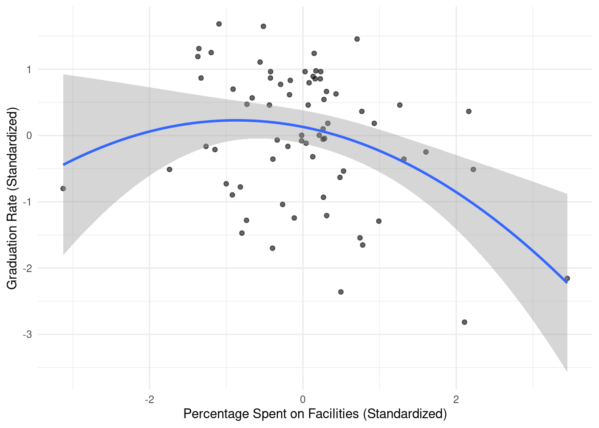
Figure 12: Relationship Between Facilities Spending and Graduation Rates
The percentage spent on facilities shows a significant negative linear relationship (β = -2.402, p = 0.026), as illustrated in Figure 12. This suggests that boards allocating a larger proportion of their budget to facilities tend to have lower graduation rates, possibly indicating trade-offs between infrastructure spending and other educational resources.
Per-Student Expenses
ggplot(data_scaled, aes(x = expenses_per_quota, y =`Four Year Graduation Rate`)) +geom_point(alpha =0.6) +geom_smooth(method ="lm", formula = y ~poly(x, 2), se =TRUE) +labs(x ="Expenses per Student (Standardized)",y ="Graduation Rate (Standardized)") +theme_minimal()
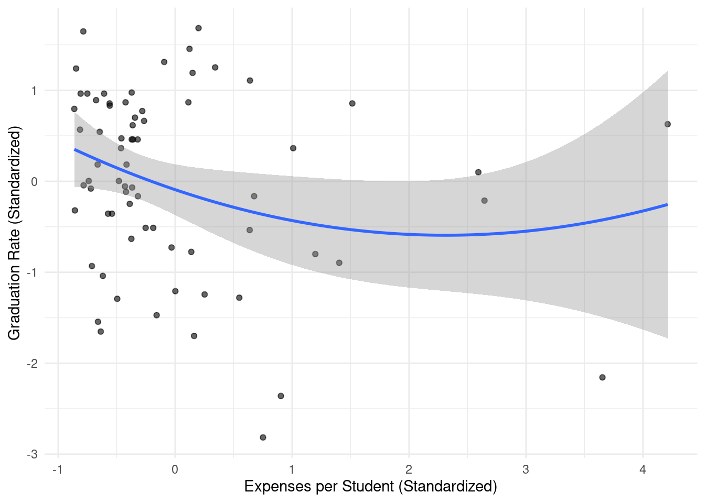
Figure 13: Non-linear Relationship Between Per-Student Expenses and Graduation Rates
Per-student expenses show a significant quadratic relationship (β = 3.444, p = 0.013), as shown in Figure 13. The U-shaped relationship suggests that while initial increases in per-student spending may be associated with lower graduation rates, there appears to be a threshold beyond which additional spending becomes positively associated with graduation rates.
Secondary Findings
Total Expenses and Enrollment
While neither total expenses nor total enrollment showed statistically significant relationships with graduation rates at the conventional p < 0.05 level, both variables exhibited potentially meaningful trends:
ggplot(data_scaled, aes(x =`Total Expenses`, y =`Four Year Graduation Rate`)) +geom_point(alpha =0.6) +geom_smooth(method ="lm", formula = y ~poly(x, 2), se =TRUE) +labs(x ="Total Expenses (Standardized)",y ="Graduation Rate (Standardized)") +theme_minimal()ggplot(data_scaled, aes(x =`Total Enrolment`, y =`Four Year Graduation Rate`)) +geom_point(alpha =0.6) +geom_smooth(method ="lm", formula = y ~poly(x, 2), se =TRUE) +labs(x ="Total Enrollment (Standardized)",y ="Graduation Rate (Standardized)") +theme_minimal()
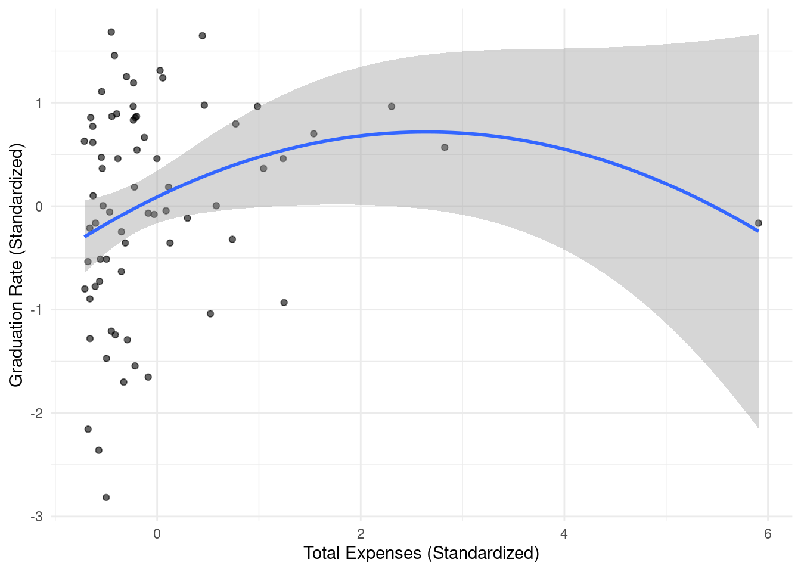
Figure 14: Relationships Between School Board Size Metrics and Graduation Rates
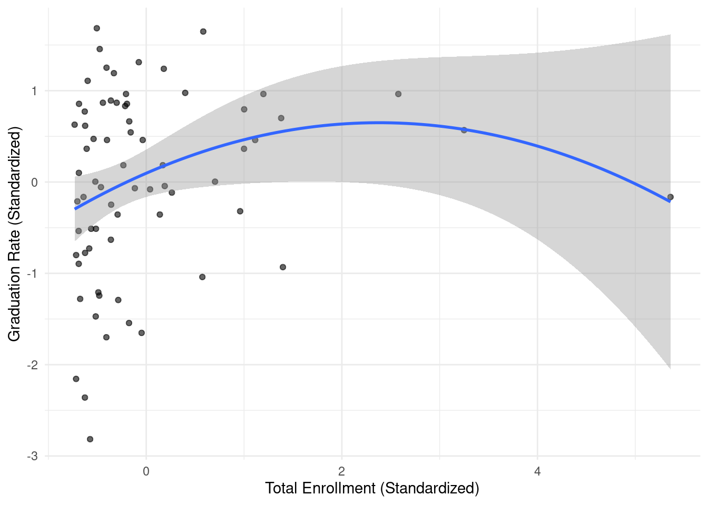
Figure 15: Relationships Between School Board Size Metrics and Graduation Rates
As shown in ?@fig-size, both total expenses and enrollment suggest potential non-linear relationships with graduation rates, though these relationships did not reach statistical significance in our model.
Model Fit
ggplot(data_scaled, aes(x =fitted(poly_model), y =`Four Year Graduation Rate`)) +geom_point(alpha =0.6) +geom_abline(intercept =0, slope =1, color ="red", linetype ="dashed") +labs(x ="Predicted Graduation Rate (Standardized)",y ="Actual Graduation Rate (Standardized)") +theme_minimal()
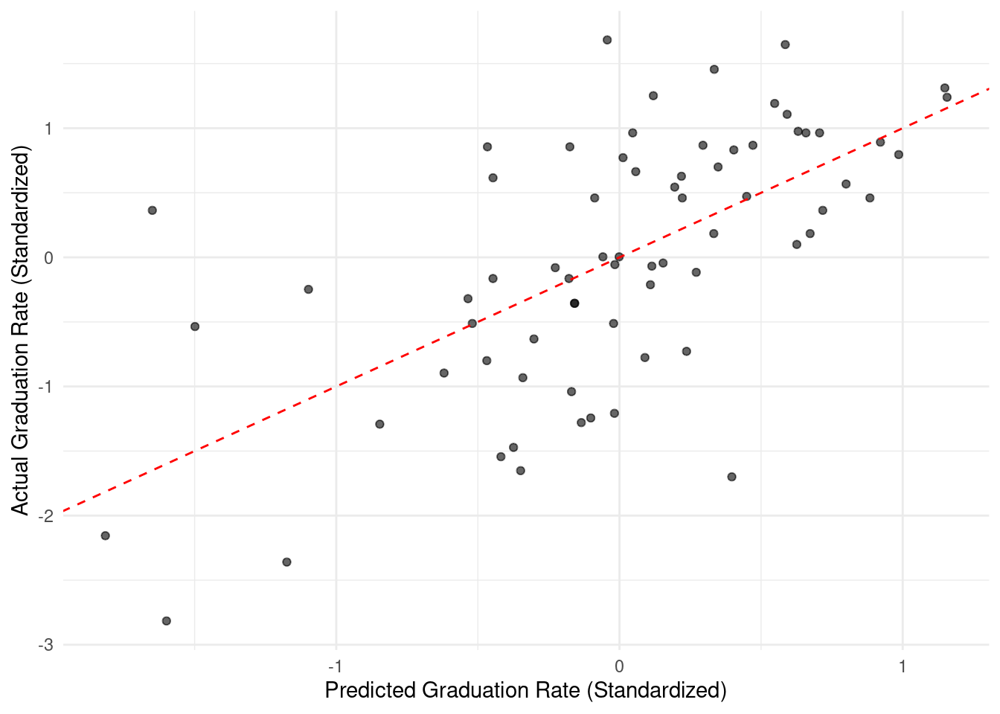
Figure 16: Predicted vs Actual Graduation Rates
Figure 16 shows the relationship between predicted and actual graduation rates. The model explains approximately 40.4% of the variance in graduation rates (R² = 0.404), suggesting that while our identified factors are important, there remain other unobserved variables that influence graduation rates.
Discussion
Key Findings and Implications
Our analysis reveals several important insights about the factors influencing graduation rates in Ontario school boards. The most striking finding is the strong negative relationship between the percentage of households without post-secondary degrees and graduation rates. This relationship suggests an intergenerational aspect to educational achievement, where students from communities with lower educational attainment face additional challenges in completing their secondary education.
The complex relationship between per-student expenses and graduation rates is particularly noteworthy. The U-shaped relationship we observed suggests that simply increasing funding may not always lead to better outcomes. This finding aligns with previous research suggesting that the effectiveness of educational spending depends heavily on how resources are allocated [@educationspending]. School boards might benefit from examining the spending patterns of high-performing boards that operate in the “efficient” region of this curve.
Resource Allocation Trade-offs
The negative relationship between facilities spending and graduation rates raises important questions about resource allocation. While maintaining adequate facilities is crucial for educational delivery, our findings suggest that boards allocating a larger proportion of their budget to facilities tend to have lower graduation rates. This could indicate that:
Some boards might be forced to prioritize urgent infrastructure needs over other educational resources
Older facilities requiring more maintenance might be concentrated in areas facing other socioeconomic challenges
There might be an optimal balance between infrastructure investment and direct educational spending
Limitations
Several limitations of our analysis should be noted:
Data Constraints
Our analysis is cross-sectional, looking at a single academic year (2019-2020)
The COVID-19 pandemic may have influenced both spending patterns and graduation rates during this period
We lack data on important factors such as:
Teacher qualifications and experience
Specific program offerings
Student-level characteristics
Methodological Considerations
Our polynomial regression model, while capturing non-linear relationships, may not fully represent more complex interactions between variables
The R-squared value of 0.404 suggests that substantial variation in graduation rates remains unexplained by our model
The standardization of variables, while necessary for our analysis, makes direct interpretation of effect sizes less intuitive
Future Research Directions
Several promising avenues for future research emerge from our findings:
Longitudinal Analysis: Examining how these relationships evolve over time could provide insights into the long-term effects of different spending patterns and policy changes.
Program-Level Analysis: Investigating specific educational programs and interventions could help identify which approaches are most effective at improving graduation rates, particularly in communities with lower educational attainment.
Resource Allocation Optimization: Developing models to help school boards optimize their resource allocation decisions, particularly regarding the balance between facilities maintenance and other educational spending.
Policy Implications: Studying how provincial funding formulas might be adjusted to better support boards facing particular challenges, such as aging infrastructure or high concentrations of socioeconomic disadvantage.
Broader Context
Our findings contribute to the ongoing discussion about educational equity in Ontario. The strong relationship between community educational attainment and graduation rates suggests that breaking cycles of educational disadvantage may require interventions that extend beyond the school system itself. This might include:
Community-based programs to support adult education
Enhanced early childhood education initiatives
Targeted support for communities with historically lower educational attainment
Integrated approaches that address both educational and broader socioeconomic factors
The complex relationships we’ve identified between financial resources and educational outcomes also suggest that policy makers should consider more nuanced approaches to school funding, moving beyond simple per-student funding formulas to consider the specific contexts and challenges faced by different school boards.